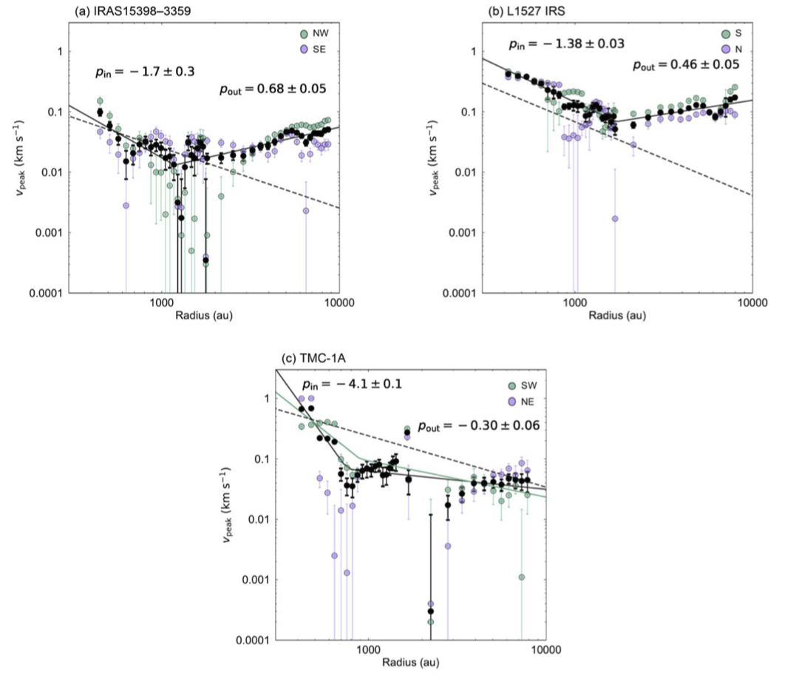

About Me
I am a project assistant professor at Graduate School of Science and Engineering, Kagoshima University in Japan. My research interest is star and planet formation. I am particularly studying disk and planet formation processes around protostars with observations at (sub)millimeter wavelengths.
Research
Stars and protoplanetary disks, which are disk-shaped structures with a size of ~100 au surrounding the central star, form through gravitational collapse of dense cores with a size of ~10,000 au. Then, planet formation occurs in the protoplanetary disks. Obtaining a whole picture of star and planet formation therefore requires to understand physical processes happneing over a wide spatial range from ~10,000 au down to ~10 au. I have been investigating the gas kinematics and dust structures around protostars at various spatial scales and connections between them.
Warped Disk around a Protostar
 Disk Structure around the Class I Protostar L1489 IRS Revealed by ALMA: A Warped-disk System
Disk Structure around the Class I Protostar L1489 IRS Revealed by ALMA: A Warped-disk System A discovery of a warped disk around a protostar L1489 IRS, which suggests disk formation in a turbulent environment.
Angular Momentum Transfer Process from a Core to a Disk
 Which Part of Dense Cores Feeds Materials to Protostars?: The Case of L1489 IRS
Which Part of Dense Cores Feeds Materials to Protostars?: The Case of L1489 IRS
A study on the angular momentum transfer process from thousands au to hundreds au scales in L1489 IRS.
Kinematics of Protostellar Envelopes/Cores
 Probing Velocity Structures of Protostellar Envelopes: Infalling and Rotating Envelopes within Turbulent Dense CoresGas kinematics around three protostars over radii of r~1000–10,000 au. We found two different regimes at smaller and larger radii in terms of kinematics. It is suggested that infall and rotation motions are dominant at scales less than ~1,000 while velocity structures at larger scales are turbulent.
Substructure in a Young, Embedded Disk
Early Planet Formation in Embedded Disks (eDisk). V. Possible Annular Substructure in a Circumstellar Disk in the Ced110 IRS4 SystemHint of early substructure formation in a young, embedded disk around Ced110 IRS4A.
Contact
E-mail: jn.insa.sai_at_gmail.com (Replace _at_ with @)